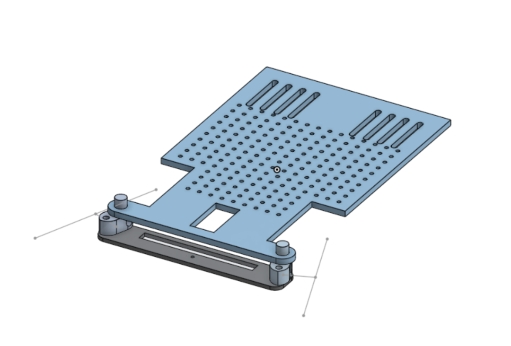

Autonomous Racing Robot
Project Images

Learning
- Electrical circuit design: h-bridges, buck converters, sensors, among others.
- Electrical noise protection and signal integrity..
- Writing software (motor control, sensor data processing, state machines) on a STM32 Blue Pill.
- PID control.
- CAD modelling (SOLIDWORKS, OnShape) and rapid prototyping, manufacturing.
Project Overview
Over the summer of 2023, I designed and built an autonomous robot to compete in the annual ENPH 253 Robot Summer competition. This project involved a wide range of skills, including electrical circuit design, embedded software development, and rapid mechanical design, protyping and fabrication. Moreover, as we were only given six weeks to build the entire robot from scratch, I also learned a lot about project management and team coordination.
Competition Introduction
ENPH 253: Introduction to Instrument Design is a second-year engineering physics project course that exposes
students to a wide range of hands-on engineering skills. In teams of four, students have to design, build, and test an autonomous robot to compete in a themed racing competition.
In my year, the theme was Mario Kart! The robots had to autonomously race through a track with various obstacles, as well as collect coins and blocks on the way for extra points.
Students are only given six weeks to complete the entire project.
Competition Rules

Above is an overview of the competition surface.
The competition is a series of one-on-one races between two teams. Each robot starts at the beginning of the track opposite of eachother.
Three points are gained for every lap a robot completes. There are multiple ways to complete a lap. The easiest way is to design your robot to follow a black taped line (on the map highlighted in blue).
There is also an IR beacon at the end of the surface that robots can hone onto for navigation.
One point is gained for every coin or blocked picked up (the gold circles and white squares on the map). In contrast, picking up a magnetic bomb (highlighted in red) forces the robot return to the start of the track and lose all its coins.
Shortcuts exist on the track. For example, a robot can opt to take the zipline (highlighted in black), or even jump off "Rainbow Road."
Design
Brainstorming and Strategy
Our team brainstormed various strategies and designs to maximize our points in the competition. We decided to design a robot that would be able to
collect blocks while following both the taped line as well as hone onto the IR beacon. Using the IR beacon would allow us to take a short cut: we would be able to cut straight across first section of the racetrack instead of the winding taped line.
To reduce our lap time even further, we also decided to design our robot to be able to jump off "Rainbow Road." The yellow route below highlights our robot's proposed path.
With this in mind, our robot had to have the following capabilities:
- A mechanism to pick up blocks and store them.
- Hone onto an IR beacon using an IR sensor.
- Line sensors to follow tape.
- Designed to mechanically withstand jumping off "Rainbow Road."
Above is a top down representation of our robot's design. The robot will be a four-wheeled car with rear-wheel drive powered by two DC motors. Moreover, as the robot will be driving over rough terrain, the wheels
will be fitted with large rubber tires for better traction and cushioning. The battery will also be placed near the rear of the robot. Circuitry will be placed in the center of the robot.
To pick up blocks, the robot will be designed to have a "car wash intake" mechanism controlled by a motor. This mechanism will be able to collect blocks and place them in the robot's storage area.
Mechanical Design
The robot was first designed on OnShape, a cloud-based CAD software. The chassis was designed to be laser printed in multiple parts using fiberwood, which were then assembled using bolts.
One important feature of the robot was the Ackermann steering geometry. This design allows the inner wheel to turn at a sharper angle than the outer wheel, allowing for better handling and a reduced turning radius.
The steering bar was manufactured using laser cutted fiberwood, then mounted to the bottom of the chassis base using two 3D-printed bosses. These bosses are then bolted to the front wheels of the robot.
For the intake, we went forward with a "car wash" style mechanism. The intake consists of two rotating rubber brushes powered by a motor. As the robot drives forward, blocks are funnelled into the spinning brushes and sucked into the robot's storage area. To assist with block collection, a sheet metal ramp was fabricated and mounted to the front of the robot.
Electrical Design
System Overview
Below is the electrical system diagram of our robot.
Power
Motor Control
H-bridgeLine Following
Infrared Detection
Collision Sensing
Software Design
The robot's software was written in C using the STM32CubeIDE. The main components of the software include:
- Motor control using PWM signals.
- Sensor data processing from line sensors and IR sensor.
- State machine to manage different robot states (e.g., line following, IR following, jumping).
- PID control for precise motor speed and steering angle adjustments.